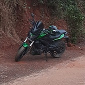
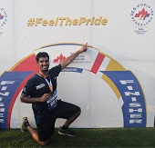
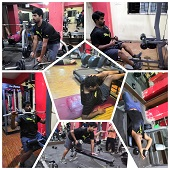
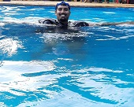

The Proposition
"I didn't come this far to only come this Far"
My day begins with the hope of enduring another journey; embedding another memory; and enkindling another vision. As I sail along, all I can cherish are the memories that are made. I believe less in the gusts of destiny and more in setting my sail right. On a regular non-working day, mostly you can find me trading at my desk; or hitting the gym; or gliding through the swimming pool; or chasing the wind on my motorbike. My interests rests at finessing financial models, challenging my fitness, and planning my travel. My hobbies are scarce as I just listen to music and update my playlists.
You can count on me for a game of any sport and am always in to explore new places. Occasionaly, you can find me gossip about sports, especially cricket. I am not an avid binge watcher, but I have watched all movies of Marvel, DC, James Bond, Pirates of the Caribbean, Transformers and Fast&Furious. My favorite sitcoms are 'The Big Bang Theory' and F.R.I.E.N.D.S. My pals nicknamed me 'Panda' after I got inspired by the movie, 'Kung Fu Panda'
Travelling and Biking
I love to travel on my Dominar 400 and I have named it "Yayavar", whose meaning in Sanskrit is 'Traveller or Wanderer'. I have visited various places across South India on my Bike. If you need detailed itinerary for Pondicherry, Chennai, Hampi, Malenadu and Goa, please reach out to me. I have covered over 50,000 kms in Motorbike riding, over a period of 4 years. I have four more trips planned i.e., Kanyakumari (Southern-most), Assam (East), Gujarat (West) and Ladakh (Northern Himalayan region). Also, in my bucket list, I intend to visit 100 countries before I run out of gas.
Trading and Investing
Certified in Options Trading Strategies. My interest towards Trading and Investing began few years back and the following are the areas that I have explored. (1) Basic Fundamental Analysis (2) Majority of Technical Analysis and a stronghold in RSI, Bollinger Bands, EMA, Stochastic, Volume Profile and HeikinAshi candles. (3) Completed the Supply and Demand: Core Strategy (4) Thorough understanding of Derivatives – Futures and Options (5) All Option Strategies and how the payoff diagrams respond to the Greeks. (6) Expiry-day trading strategies (7) I am in pursuit of the professional Amibroker course and currently devising automated strategies via Amibroker.
Long Distance Running
 My interest towards running 10k and marathons began as a way to contribute to social causes and be part of a healthy community. Almost every year, I take part in either 10K runs or half-marathons. My best time in 10K run is 57 minutes and the longest distance I have run is 21.1 km during a half-marathon taking 2h44m to complete. My fastest 1K is 3m37s and best mile is 8m10s. I jog for 5K runs almost every month as part of my cardio activity.
Gym: Strength and Conditioning
 I started gymming in 2019 and had a rapid progress in 6 months losing over 15 kgs and developing muscles. Due to the pandemic, my adrenaline came to a halt and I couldn't keep up the same intensity with home workouts. I have resumed my Gym since Oct 2021 and aspire to perform a human-flag by December 2023. What I learnt from Gymming, is that Workout is just one of the foundational pillar, it has to be ably supported by other pillars like, Hydration, Recovery, Good rest, Balanced meal and an emotionally happy mind
Recreation
 Swimming is my best recreational sport. I never miss out on an opportunity to swim. I consider myself to be a decent swimmer. I enjoy other Sports as well like Basketball, Football, Cricket, Chess, Carrom, Poker and Badminton when I hang out with my friends. I do not excel at these sports but am a good competitor. I am always in for a game!